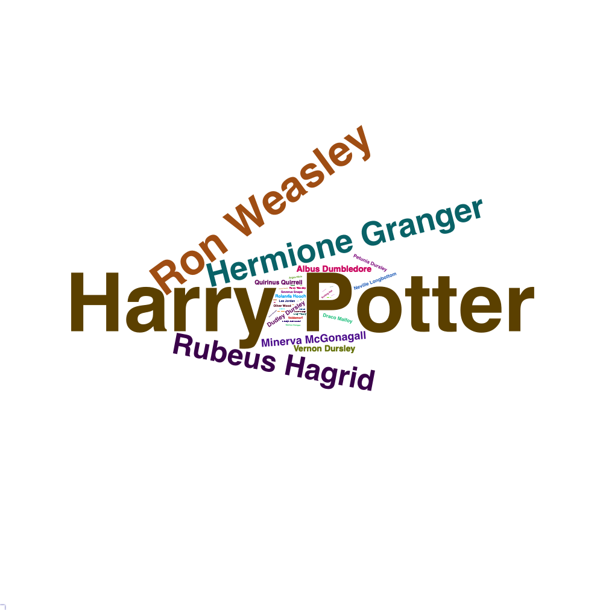

scene character_name
1 1 Albus Dumbledore
2 1 Minerva McGonagall
3 1 Albus Dumbledore
4 1 Minerva McGonagall
5 1 Albus Dumbledore
6 1 Minerva McGonagall
dialogue
1 I should have known that you would be here, Professor McGonagall.
2 Good evening, Professor Dumbledore. Are the rumours true Albus?
3 I'm afraid so, Professor. The good, and the bad.
4 And the boy?
5 Hagrid is bringing him.
6 Do you think it wise to trust Hagrid with something as important as this?2 Assignment 2
2.1 NYC Flights
Here we can take a look at our dataset.
2.1.1 Analyze 1
2.2 About Me
Greetings! My name is Sinan. I have a BSc. in geomatics engineering from ITU, and I have been working as a data scientist for over a year now. I stumbled into machine learning when I was trying to calculate a missing part of some quantitative data for a school project of mine. I still remember what I googled: “create an equation with known x and ys”. Turns out my super original idea was already there for decades! I fell in love with the field and the community of it, so I am here! Find out more about me on my LinkedIn page.
2.3 UseR-2022
Emil Hvitfeldt - Improvements in text preprocessing using `textrecipes`
The speaker promotes the newest improvements in textrecipes library. textrecipes is a library that helps with text processing for NLP. The speech consists of 3 main capabilities of the library: tokenization, modification and numbers.
Tokenization

Using raw text is not a great way to talk with computers. One of the main processes in text processing is using tokens. We take pieces of large strings and store them in tokens to extract information in a more specific way and help computers understand human language. There are several tokenization methods in textrecipes; one can split texts into characters, words, sentences and bytes.
Modification

We also need to modify our texts to avoid misleading parts of them and get more explanatory information.
One of the modification methods is stemming, which is a process to access the root meaning of the words. Despite the differences in their appearance, some words can contain the same meaning, and we want them to describe the same thing to a computer.
Another method is to remove the stopwords. There are some words such as “and”, “the” can be repeated a lot in texts while not meaning a lot. They are usually dropped in NLP projects.
Sometimes computers store the same looking characters in different ways, and while a human can see the same thing, the 2 characters will mean 2 different things to a computer. This happens in characters such as “İ”, “ö” etc. textrecipes get through these difficulties by text normalization.
While a word may mean a thing, its’ order and the word before or after that can be important. One can use sentence tokenization to capture them, but it has its own disadvantages. textrecipes uses n-grams to store tokens in pairs and get their meanings without needing sentences.
Numbers

There is one important issue left with our texts: they are still texts! We want to transform our tokens into numbers so they will have numbers to describe themselves. We can count our tokens with step_tf feature of textrecipes. Great, now we know how many times they appeared in our set, yet we may want to transform them into frequencies as well. We call this way of measure as “tf-idf”. textrecipes can also help us with that.
2.4 R Posts
Kable
We talked about text a lot, yet I’d like to go on with them. Here is a fun dataset which consists of dialogues from the first Harry Potter book.
We can see our data set here, yet it is not easy on the eyes. That’s why I spared my first topic for “kable” function of “knitr” package. You can find out more about it in this link.
To summary, kable is a great tool to adjust the options for our tables. A simple code like below will change the whole appearance.
kable(head(df))| scene | character_name | dialogue |
|---|---|---|
| 1 | Albus Dumbledore | I should have known that you would be here, Professor McGonagall. |
| 1 | Minerva McGonagall | Good evening, Professor Dumbledore. Are the rumours true Albus? |
| 1 | Albus Dumbledore | I’m afraid so, Professor. The good, and the bad. |
| 1 | Minerva McGonagall | And the boy? |
| 1 | Albus Dumbledore | Hagrid is bringing him. |
| 1 | Minerva McGonagall | Do you think it wise to trust Hagrid with something as important as this? |
But what about if we like to change more. Column names can change and we can allign values in the columns for a neater look.
kable(head(df), col.names = c("Scene Number", "Character", "The Dialogue"), align = "clr")| Scene Number | Character | The Dialogue |
|---|---|---|
| 1 | Albus Dumbledore | I should have known that you would be here, Professor McGonagall. |
| 1 | Minerva McGonagall | Good evening, Professor Dumbledore. Are the rumours true Albus? |
| 1 | Albus Dumbledore | I’m afraid so, Professor. The good, and the bad. |
| 1 | Minerva McGonagall | And the boy? |
| 1 | Albus Dumbledore | Hagrid is bringing him. |
| 1 | Minerva McGonagall | Do you think it wise to trust Hagrid with something as important as this? |
There are more things that can be done with kable and similar packages but we got what we need for now.
Counts
We stored our data in a data frame, took a look to our data and can work with it now. I would like to count the appearences of the characters in the book and working with a data frame helps us a lot to do so. This link gives cool tricks for this task.
df_freq <- aggregate(df$character_name, by=list(df$character_name), FUN=length)
df_freq <- df_freq[order(-df_freq$x),]
kable(head(df_freq), row.names = FALSE, col.names = c("Character", "Dialogue Count"), align = "lc")| Character | Dialogue Count |
|---|---|
| Harry Potter | 230 |
| Ron Weasley | 120 |
| Hermione Granger | 92 |
| Rubeus Hagrid | 81 |
| Minerva McGonagall | 31 |
| Albus Dumbledore | 24 |
Not so surprisingly, Harry Potter has the most dialogue with almost twice count of his follower: Ron Weasley.
Word Cloud
Finally, we will create a word cloud. It is not exactly a word cloud rather a character cloud. Word clouds are used to visualize text and they look great in my opinion. We use wordcloud2 package to visualize these characters. There is not an easy way to show this cloud on HTMLs, so we save it locally then add it to the page.
library(wordcloud2)
library(webshot)
library(htmlwidgets)
cloud=wordcloud2(data=df_freq, size=0.75)
saveWidget(cloud, "words.html", selfcontained = F)
webshot("words.html", "words.png", delay = 6, vwidth = 1000, vheight = 1000)
There! We have a nice visualization on characters which we can see appearances of relatively.